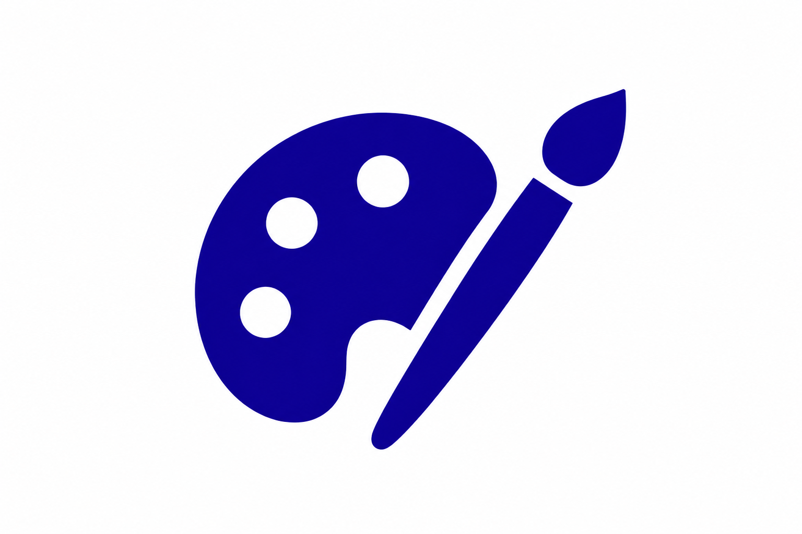
Data Artistry
The pen plotter visualization demonstrates that physical media can communicate something digital charts cannot.
Examining the invisible labor and human cost behind AI systems.
Global education datasets are presented as objective measurements of reality. They are not. The ability to submit data is tied to political conditions, economic stability, and national priorities. Some countries cannot report because institutional capacity has deteriorated. Others choose not to because they face no consequences for opting out.
This project visualizes those patterns — and then asks a harder question: where do the countries that disappear from these datasets go? The answer, in Venezuela’s case, is into the AI labor supply chain. The same conditions that cause a country to vanish from UNESCO reporting are the conditions under which data annotation work becomes one of the only available sources of dollar-denominated income. Visibility is not neutral. This zine makes that argument across eight visualizations, moving from the global system to a single annotator’s screen.
Each dot represents a spatial aggregation of UNESCO and World Bank education indicators.
Darker dots indicate stronger or more complete data signals.
Global education datasets are presented as objective measurements of reality. They are not. The ability to submit data is tied to political conditions, economic stability, and national priorities. Some countries cannot report because institutional capacity has deteriorated. Others choose not to because they face no consequences for opting out.
This project visualizes those patterns — and then asks a harder question: where do the countries that disappear from these datasets go? The answer, in Venezuela’s case, is into the AI labor supply chain. The same conditions that cause a country to vanish from UNESCO reporting are the conditions under which data annotation work becomes one of the only available sources of dollar-denominated income. Visibility is not neutral. This zine makes that argument across eight visualizations, moving from the global system to a single annotator’s screen.
Where data is missing, narratives get invented by markets,
governments, or algorithms.
Global education datasets present themselves as objective measurements of reality. They are not — they are records of who participates, who opts out, and who loses the capacity to be counted at all. These five questions guided the investigation, moving from the structural dynamics of global reporting to the lived experience of the workers those dynamics produce.
Disappearance from global datasets is not a single event — it is a process. Countries exit international reporting systems through two distinct pathways. The first is institutional decline: conflict, economic contraction, sanctions, or administrative breakdown erodes the capacity to collect and submit data. The second is strategic withdrawal: countries with strong institutions and political leverage choose not to participate when compliance offers no benefit. Both pathways produce the same gap in the dataset. Neither is labeled as such by the data itself. Missing data looks identical whether it reflects collapse or choice.
The World Bank Statistical Capacity Index measures the formal strength of a country’s national statistical system — its methods, surveys, and data standards. It does not measure willingness to participate in specific reporting pipelines. A country can maintain a high SCI score and simultaneously withdraw from UNESCO reporting due to political decisions, administrative disruption, or shifting national priorities. Venezuela illustrates this precisely: its SCI score remained relatively stable even as its UNESCO reporting collapsed. The divergence proves that disappearing from a dataset is not the same as losing the ability to produce data. It can simply mean losing the conditions — political, economic, institutional — required to keep submitting it.
Venezuela’s trajectory across two decades shows a country moving between two global systems simultaneously — exiting one as it enters another. As its national reporting system weakened and its presence in international education indicators faded, many Venezuelans entered the digital labor markets that support artificial intelligence: annotating images, labeling text, moderating content, and training the models that power AI systems globally. The disappearance from one dataset and the emergence in another is not coincidental. Both reflect the same underlying conditions — economic contraction, institutional weakening, and the need for dollar-denominated income in a hyperinflationary economy. The same forces that made UNESCO reporting unsustainable made annotation work attractive.
Quantitative data surfaces patterns. It cannot explain what those patterns feel like from inside them. The 51 annotator quotes collected from journalism, academic research, and public testimony do what the choropleth maps and scatter plots cannot — they put a face on the structural conditions the data describes. A worker describing falling asleep at the keyboard while waiting for tasks to appear is not an anecdote. It is evidence of the same infrastructure failures that show up as gaps in Venezuela’s electricity grid data. The qualitative and quantitative layers of this project are not separate arguments. They are the same argument told at different scales.
The pen plotter visualization is the clearest answer this project offers to that question. The decision to encode 51 annotator quotes as physical glyphs — drawn one at a time by a machine over hours — was not decorative. It was methodological. The physical drawing process mirrors the labor it represents: mechanical, repetitive, accumulating into something larger than any individual mark. A digital chart could have communicated the same thematic distribution faster and more legibly. It could not have communicated what it feels like to produce that work. Form and medium are not neutral choices. They are arguments about what the data means and what the reader should feel encountering it.
Rather than producing disconnected charts, the zine was designed as a single narrative. Each visualization answers one question while setting up the next. The structure moves progressively from global systems to institutional dynamics to a single country to individual workers — narrowing the lens until the system becomes a person.
Three design principles governed every visualization:

The pen plotter visualization demonstrates that physical media can communicate something digital charts cannot.
The project asks why data is missing rather than assuming absent data means absent conditions.
Visualizations move from familiar maps into increasingly abstract representations, building reader intuition before introducing complexity.
Zine Visualizations
Section 1
The first map establishes the foundation: which countries report education indicators to UNESCO and which do not. The key insight is that missing data has two causes — institutional decline and strategic choice. Both produce the same gap in the dataset. Neither is labeled as such by the data itself.
High-income countries appear in the non-reporting column too — not because they lack capacity, but because they face no consequences for opting out. That asymmetry is the first structural argument the project makes.
Missing data is not random. It reflects both capacity loss and power.
Instead of collapsing everything into a single score, each country is represented as a GDP circle with flowing curves showing individual readiness indicators beneath it. Internal variation is preserved rather than averaged away. Countries with strong reporting capacity show smoother, more aligned curves. Countries with weaker or inconsistent reporting show fragmented or incomplete patterns.
The visualization makes visible what a traditional bubble plot hides: that a single score conceals as much as it reveals.
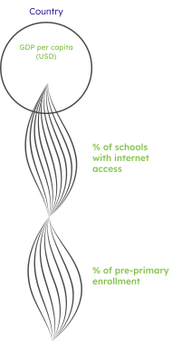
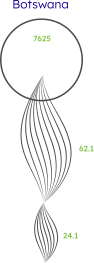
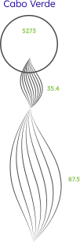
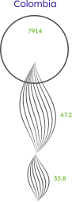
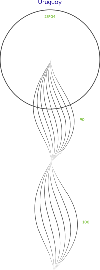
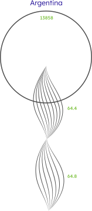
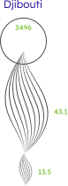
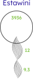
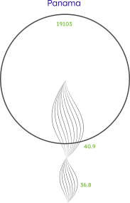
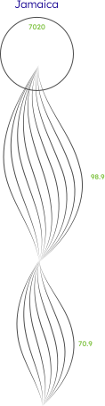
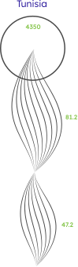
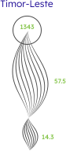
Countries are grouped by reporting status across two decades. Each dot is colored by its statistical capacity rating. The critical finding: high-capacity countries appear in the non-reporting column too. Non-reporting is not always a capacity problem. Sometimes it is a political decision.
This visualization sets up the Venezuela pivot directly — a country can maintain formal statistical infrastructure while simultaneously withdrawing from international reporting pipelines.
Section 2
Multiple normalized indicators are layered across Venezuela’s recent history. The critical finding is visible as a divergence: statistical capacity remained relatively strong while UNESCO reporting collapsed. Disappearing from an international dataset is not the same as losing the technical ability to produce statistics. Venezuela retained the capability. It lost the conditions — political, economic, institutional — required to continue participating.
Countries are positioned on two axes: UNESCO reporting completeness and AI ecosystem presence or data labor intensity. The AI ecosystem axis was constructed from public sources including OpenAlex, arXiv, Crunchbase, OECD AI Observatory, Hugging Face, investigative journalism, Fairwork, and evidence of annotation work on Toloka, Appen, and Remotasks.
Four quadrants emerge:
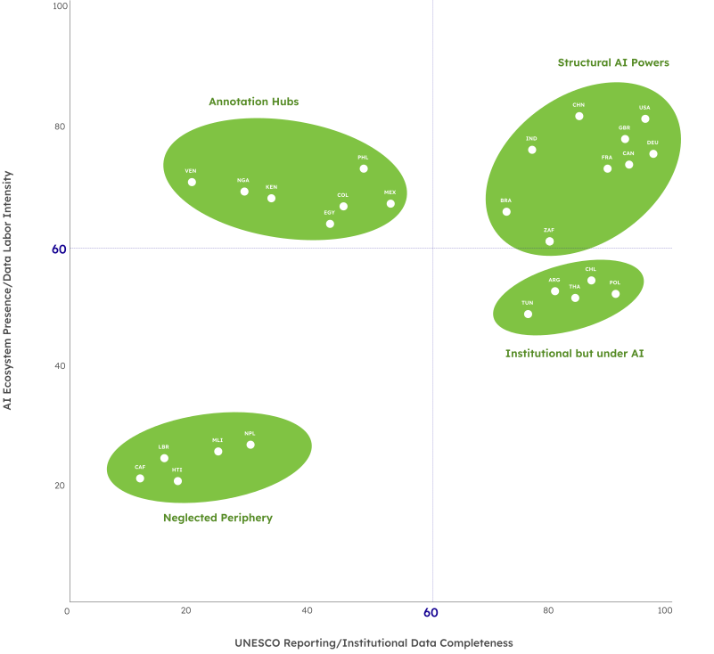
Venezuela appears as a Data Shadow. The quadrant makes the central argument of the entire zine visible as a spatial relationship — the countries that disappear from datasets are often the same countries building the datasets AI learns from.
This is the project’s most experimental piece.
Instead of plotting quantitative values, 51 quotes from Venezuelan AI annotators were encoded as glyphs. Each quote became one mark. Different shapes represent recurring themes: exploitation, uncertainty, infrastructure failure, economic hardship, dehumanization.
The pen plotter was chosen deliberately. The physical drawing process — mechanical, repetitive, one mark at a time — mirrors the labor it represents. A digital chart communicates the same data faster. The pen plotter communicates something a digital chart cannot: what it feels like to produce something of value through repetitive mechanical work, invisibly, at scale.
The grid structure represents the larger system. The individual glyphs preserve the uniqueness of each voice within it.
The project concludes with the voices it was built to represent. Fifty-one statements from Venezuelan data annotators, synthesized from journalism, academic research, and public testimony.
They transform macro-level statistics into lived human experiences. By the time a reader reaches these quotes, they have seen the global system that produced the conditions these workers describe. The quotes land differently because of everything that came before them.
Every decision in this project was made in service of one claim: that how you show data is itself an argument about what data means. A choropleth that grays out missing countries is making a claim. A pen plotter that draws for hours is making a claim. A zine that cannot be skipped is making a claim. The four decisions below were not aesthetic choices — they were the methodology.
Most data visualization work assumes a user who navigates freely — clicking, filtering, jumping between views. That assumption is a design choice, and it is the wrong one for this project. A dashboard about data inequality lets you opt out of the parts that are uncomfortable. A zine does not. Every page assumes you have seen the one before it. The format enforces the argument: you cannot understand what Venezuela’s disappearance from AI labor markets means until you have seen what its disappearance from UNESCO datasets looks like. Sequence is the methodology.
Standard visualization practice fills gaps, interpolates missing values, or excludes incomplete records. This project did the opposite. Every missing data point was preserved and made visible — as a gray country on a choropleth, as an absent curve in a readiness profile, as a dot that never appears in a full-reporting column. The design decision was to refuse the convention that absence means nothing. In this dataset, absence is the finding.
The 51 annotator quotes could have been visualized as a word cloud, a bar chart of themes, or a scrollable quote gallery. All of those would have been faster to read and easier to reproduce. The pen plotter was chosen because the physical act of drawing — mechanical, repetitive, one mark at a time, accumulating into something larger than any single glyph — is the closest a visualization can get to the experience it is representing. The machine drew for hours. The annotators work for hours. That parallel is not metaphor. It is the design.
The eight visualizations move from global system to institutional dynamics to one country to one annotator’s screen. That narrowing was not inevitable — the project could have stayed at the global scale, or focused entirely on Venezuela, or presented only the worker testimony. The decision to move through all four scales was a claim: that you cannot understand the individual without the system, and you cannot care about the system without the individual. The structure is the argument.
The AI labor quadrant required constructing an original axis from scratch. No existing dataset measures AI ecosystem presence and data labor intensity together — the vertical axis was built by synthesizing OpenAlex, arXiv, Crunchbase, OECD AI Observatory, Hugging Face model data, Fairwork reports, and investigative journalism from Time, Rest of World, and MIT Tech Review. That synthesis is itself a contribution — an argument that these sources, read together, tell a story no single dataset can tell alone.
This project was finished before it was done. The zine exists, the pen plotter ran, the 51 quotes are on the page. But the version of this project that should exist — with original field interviews, a peer-reviewed labor intensity methodology, and an interactive digital format that preserves the sequential logic of the print object — has not been built yet. What follows is an honest accounting of what worked, what the project’s real limitations are, and what the work that remains looks like.
The annotator quotes at the end of the zine are not remarkable on their own. Fifty-one quotes from workers describing precarious conditions is a document. What the zine does is make those quotes land as a conclusion rather than an introduction. By the time a reader encounters “We do the hard work; the AI gets the credit,” they have already seen the global reporting map, the Venezuela timeline, and the AI labor quadrant. The quote is not new information. It is the human face of something the reader already understands structurally. That sequence was the most important design decision in the project — and the hardest one to get right.
The vertical axis of the AI labor quadrant — AI ecosystem presence and data labor intensity — was constructed from public evidence rather than original data collection. Every source is cited and the methodology is transparent. But a stronger version of this project would not rely on triangulation from journalism and platform-adjacent research. It would include direct annotator interviews, platform-level task data, or a peer-reviewed methodology for labor intensity measurement. The axis is honest about what it is. It is not as rigorous as it could be.
The format works as a printed object held in two hands, turned page by page. As a portfolio artifact embedded in a webpage it loses the physicality that makes it an argument rather than a document. A reader scrolling past the pen plotter visualization on a screen is not having the same experience as a reader encountering it after turning five pages of a zine. A future version of this project would be an interactive digital experience — one that controls reading pace, prevents jumping ahead, and preserves the sequential encounter that the print format enforces naturally. That version does not yet exist.
This project uses Venezuela as a case study because the evidence is clear and the data is traceable. But the pattern — institutional disappearance from one global system, extraction into another — applies to annotation labor in the Philippines, Kenya, Pakistan, and India. It applies wherever the AI supply chain runs through communities that international datasets have already learned to overlook. Venezuela is the entry point. The argument is structural. Building the next version of this project at a comparative scale — multiple countries, multiple platforms, original field research — is the work that remains.